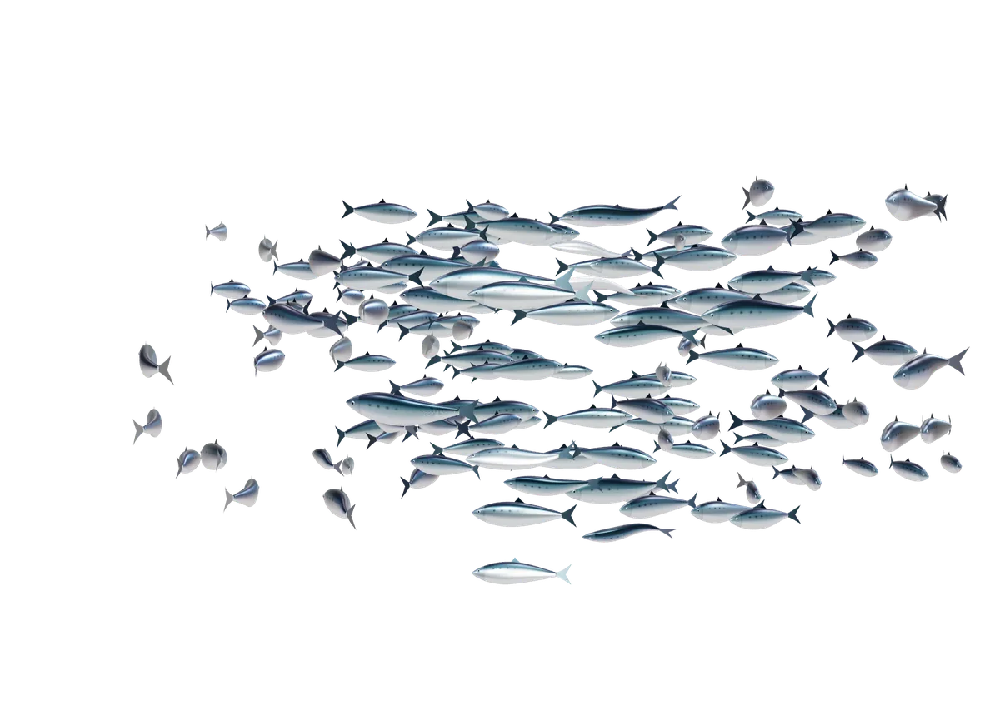
Rödel & Fils Frères · Bordeaux, 1824
Le goût de la Bretagne.
L’élégance de Bordeaux.
Des sardines de la baie de Concarneau, pêchées le matin et rangées à la main dans la boîte le jour même. Depuis 1824.
- Mises en boîte à la main à Concarneau
- Pêchées et conservées le jour même
- Neuf familles de pêcheurs
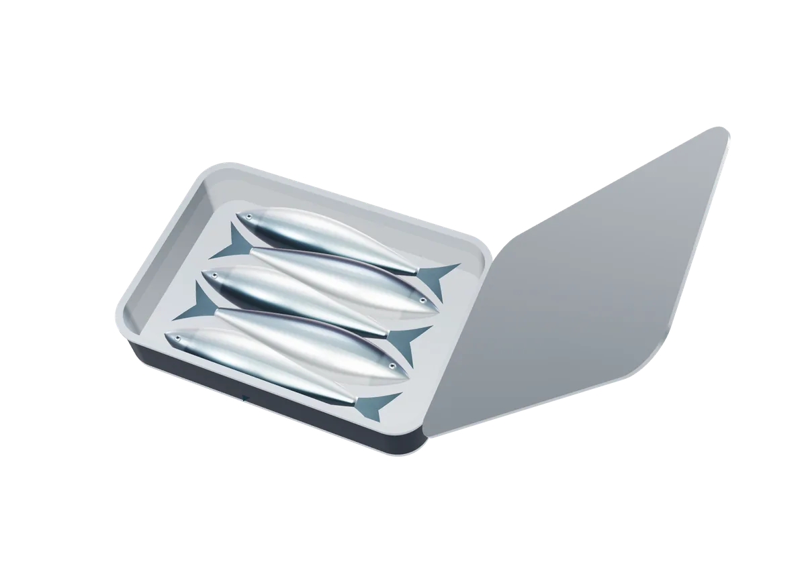
01 — Le même procédé depuis 1824
Pêchées le matin.
En boîte le jour même.
Neuf familles de pêcheurs de Concarneau ramènent la pêche à la bolinche traditionnelle, depuis la baie de Concarneau, l’archipel des Glénan et la pointe de Trévignon. Chaque sardine est nettoyée à la main, frite trente secondes pour être saisie, puis rangée dans la boîte. Jamais congelée.
- Saison
- De mai à octobre
- Eaux
- Concarneau, Glénan
- Mise en boîte
- À la main, le jour même
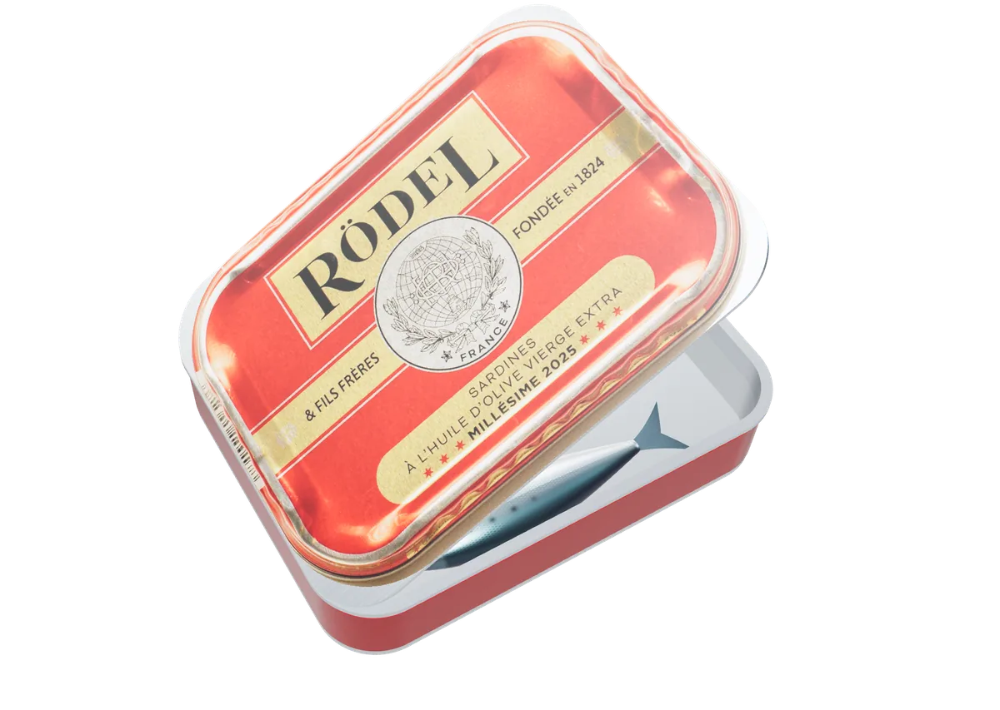
02 — Millésime
La plus belle pêche
d’une année.
La Maison Rödel se distingue par sa sélection de sardines. Le Millésime est une appellation réservée à la plus belle pêche d’une année donnée, récoltée à maturité optimale pour une richesse exceptionnelle et une remarquable profondeur de goût. Rödel indique sur chaque couvercle quand, par qui et où le poisson a été pêché.
Toute la collection
Neuf boîtes. Une seule exigence.
Sardines millésimées, recettes de la Maison et une spécialité, mises en boîte à la main à Concarneau. Les professionnels commandent à la caisse.
-
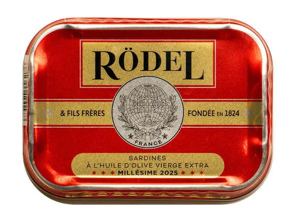
Millésime · 115 g Millésime 2025 La pierre angulaire de l’art de la conserve. 4,20 € la boîte, prix professionnel -
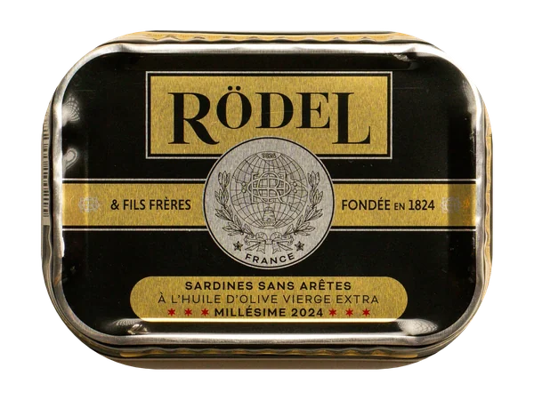
Millésime · 115 g Millésime sans arêtes Sans arêtes, comme autrefois pour la cour royale. 4,50 € la boîte, prix professionnel -
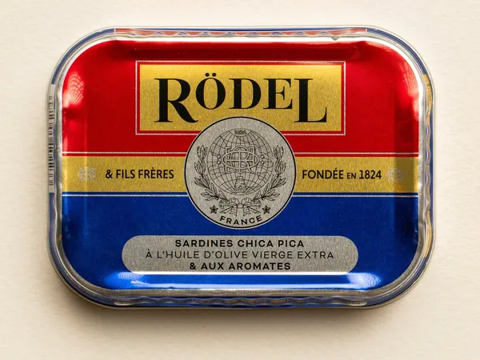
Recettes de la Maison · 115 g Chica Pica Un mélange d’épices secret, marque déposée de la Maison. 4,60 € la boîte, prix professionnel -
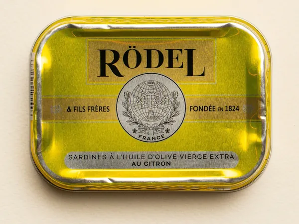
Recettes de la Maison · 115 g Citron Huile d’olive vierge extra et citron entier mûri au soleil. 4,40 € la boîte, prix professionnel -
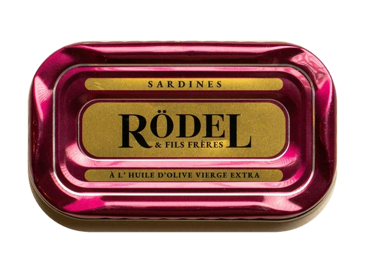
Millésime · 69 g Classique 1926 Une boîte de 69 g, pour ceux qui préfèrent ne pas partager. 3,30 € la boîte, prix professionnel -
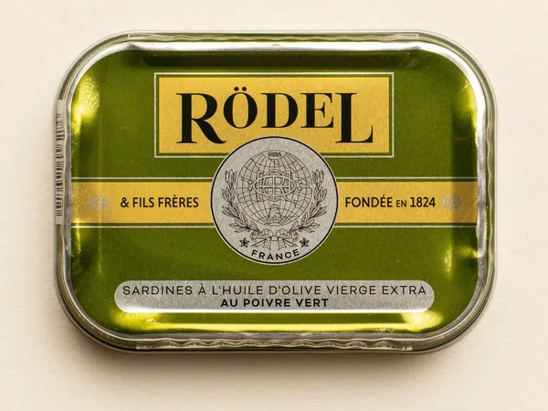
Recettes de la Maison · 115 g Poivre Vert Au poivre vert. 4,40 € la boîte, prix professionnel -
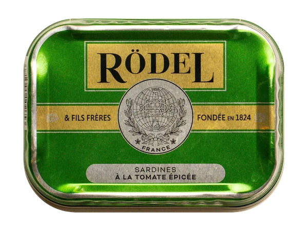
Recettes de la Maison · 115 g Tomate Épicée À la tomate épicée. 4,40 € la boîte, prix professionnel -
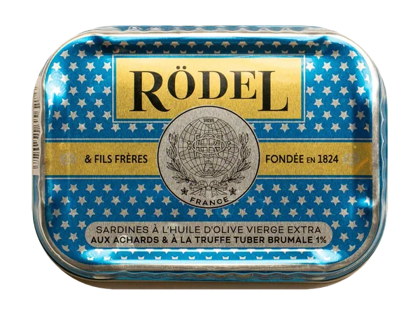
Recettes de la Maison · 115 g Achards & Truffe Aux achards et à la truffe Tuber brumale. 5,90 € la boîte, prix professionnel -
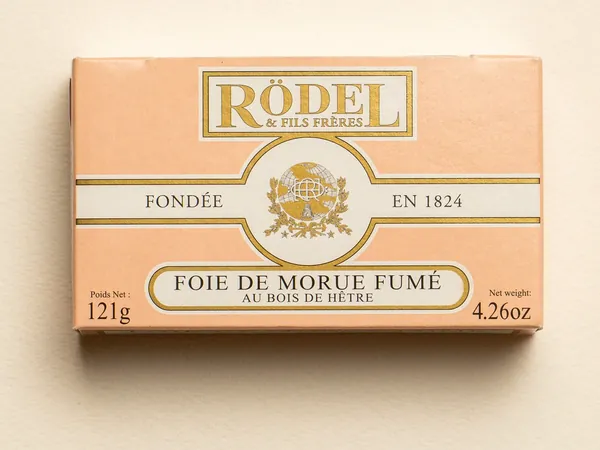
Spécialités · 121 g Foie de Morue Fumé Foie de morue fumé au bois de hêtre. 3,60 € la boîte, prix professionnel
04 — Depuis 1824
La plus ancienne marque
de conserves au monde.
En 1820, l’Amirauté française demanda à Nicolas Appert, l’inventeur de la conserve, d’établir une conserverie à Bordeaux. Il en confia la charge à son disciple le plus accompli, Charles Rödel.
Lire l’histoireDeux siècles · 1804–2025
1804
L’invention qui changea tout
Napoléon offrit une récompense à qui saurait conserver les vivres de ses armées. Nicolas Appert releva le défi et ouvrit la première conserverie à Massy.
1824
Charles Désiré Rödel
Le disciple le plus accompli d’Appert bâtit la conserverie de Bordeaux : naît Rödel & Fils Frères, aujourd’hui la plus ancienne marque de conserverie au monde.
1843
Victorine Lemoine Rödel
La veuve du fondateur dirige la Maison jusqu’en 1870 et ouvre de nouvelles usines à Étel, Concarneau, Saint-Yrieix et Port-Maria.
1872
Dix-sept usines
D’Arcachon à Concarneau, l’une des toutes premières maisons de conserves de France. La plage en contrebas de l’usine de Concarneau porte encore son nom.
v. 1880
Un globe et une ruche
L’emblème d’une Maison tournée vers le monde, qui se présentait comme fournisseur de l’empereur du Brésil, de Lord Mountbatten et de Theodore Roosevelt.
1900
Un véritable luxe
Dix millions de boîtes de sardines par an en France. La sardine en boîte était un véritable luxe, réservé aux tables les plus raffinées.
2025
Millésime 2025
Toujours pêchée au large de Concarneau et mise en boîte à la main le jour même, présente dans les plus belles maisons de Paris : un nom murmuré entre gourmets.
05 — Où trouver Rödel
Un nom murmuré
entre gourmets.
Nos produits se trouvent aujourd’hui exclusivement dans des maisons emblématiques, recherchées par les gourmets du monde entier :
- La Grande Épicerie de ParisParis
- Galeries Lafayette HaussmannParis
- Gillardeau La Boutique
- Kaviari Delikatessen
- Maison Rolle, Halles de Lyon Paul BocuseLyon
- Julius Meinl am GrabenVienne
- Maison ArostéguyBiarritz
- L’Échoppe de la LuneBordeaux
- Maison JanicotSète
- Les Accords Parfaits
- Grand Marché Marnière
- Izraël
- Épicerie de Longueil
- Maison Gabriella Delicatessen
Professionnels
Boutique B2BCommandes & partenariats
george@rodel.frConserverie
2 rue Henri Fabre29900 Concarneau, France
Bon de commande
Bon de commande B2B